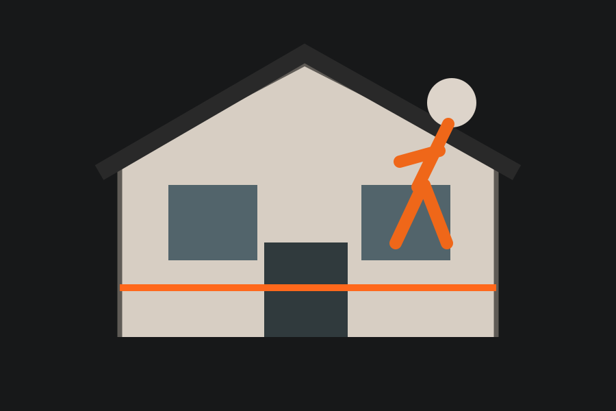

Ravalement
Rénovation visuelle et protection de la façade selon le support.

Ravalement, préparation, rénovation et isolation extérieure selon l’état du support et la configuration de votre maison.
Demander un devis →Chaque intervention est confirmée après étude du terrain, de l’accès et du support existant.
Rénovation visuelle et protection de la façade selon le support.
Nettoyage et préparation des zones avant finition.
Traitement local des zones dégradées après vérification.
Étude de travaux d’isolation extérieure selon la configuration.
Application de la finition retenue pour le projet.
Travaux ciblés sur les parties basses de façade selon leur état.